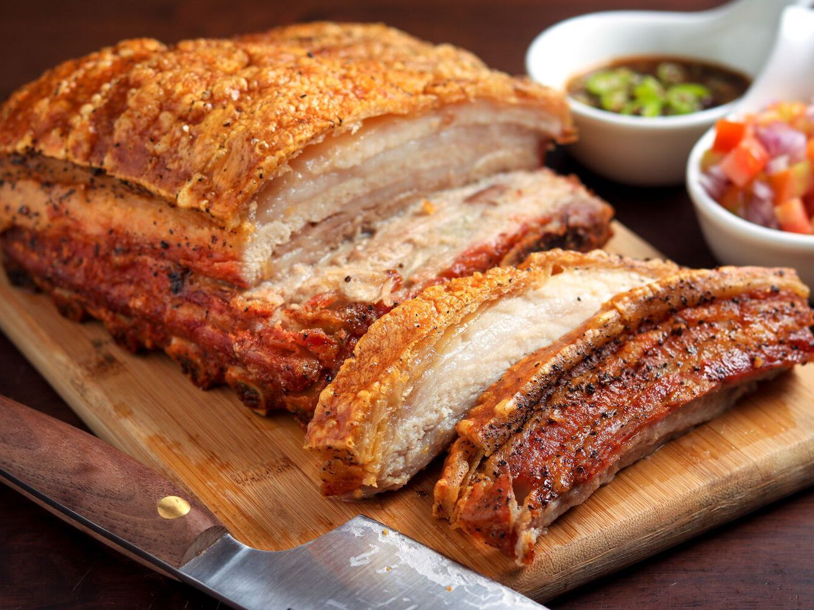

Roasted Pork Tenderloin

Description
There is nothing like baked pork tenderloin. It’s so easy to make and I feel like this is the easiest cut of pork to take on whatever flavors you fancy. In the slow cooker, the Instant Pot, on the grill, there is really no way to mess up a pork tenderloin. (Well, I’m sure there is, but not one that I’ve found yet!).
The best thing about baking a pork tenderloin though, is that crispy outside and juicy inside. While most people do eat with their eyes first, it’s when you taste the tenderloin that you will truly understand why I’m gaga for this recipe.
Ingredients
- 1 or 2 ½ pound pork tenderloins
- 1 tablespoon oil
- 2-3 tablespoons fresh lemon, lime, or orange juice - (or 1 tablespoon of each)
- 2 teaspoons Italian seasoning
- 1 teaspoons garlic powder
- 1 teaspoon cumin
- 1 teaspoon salt
- 1 teaspoon chili powder
- ½ teaspoon smoked paprika - (optional but highly recommended)
- ¼ teaspoon black pepper
Steps to make your Anabolic Pizza
- Preheat oven to 400 degrees and lightly grease a large baking/casserole dish. Pierce tenderloins all over with a fork. Rub oil onto all sides of the meat.
- Whisk together Italian seasoning, garlic powder, cumin, salt, chili powder, smoked paprika (if using) and black pepper. Sprinkle mixture over tenderloin(s), patting it onto the surface of the meat on all sides. Place in prepared baking dish and drizzle lemon/lime juice over the top.
- Bake for 25-35 minutes until outside is browned and crispy and centers are cooked through to desired doneness (you can take them out on the early side if you like the centers a little pink).
- Spoon juices from the dish over the meat. Allow to rest on a cutting board or in the baking dish for 5-10 minutes. Slice into 1 inch pieces. Spoon any remaining juices from the pan over the slices, garnish with fresh chopped cilantro if desired, and serve.
Go Back Home